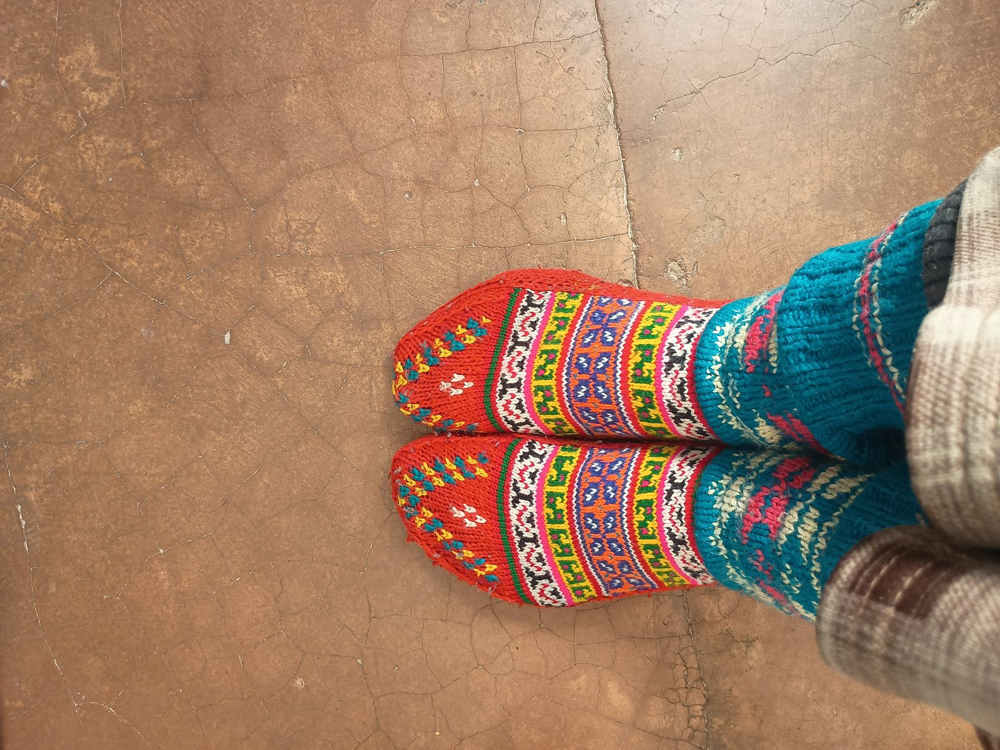

The mechanical system formed by the human foot, a hiking sock, and a mountain boot represents a complex tribological tri-layer. Within this three-body interface, motion is never perfectly static. As the ankle flexes through dorsiflexion and plantarflexion during high-grade trail ascents, tiny microscopic slip displacements occur continuously. If the sock slides against the human skin, blister-generating shear stress is transmitted directly into the epidermal stratum corneum. If the sock instead grips the skin securely and allows controlled, low-friction shear to occur between its outer knit and the boot lining, the skin remains completely protected. At RibKnitCairn, we engineer our rib-knit geometries specifically to govern this kinematic boundary.
1. The Tribological Tri-Layer: Skin, Sock, and Boot
To prevent blisters, the coefficient of static friction between the inside of the sock and the skin (μskin-sock) must always remain strictly higher than the coefficient of dynamic friction between the outside of the sock and the boot lining (μsock-boot).
When μskin-sock is greater than μsock-boot, the sock stays firmly anchored to the foot like a protective second layer of skin. Any relative movement caused by heel slippage or boot collar flex is absorbed across the outer interface, dissipating friction energy into harmless fabric glide rather than damaging dermal shear.
Standard flat-knit socks fail this fundamental tribological test because their smooth exterior surfaces grip rough boot linings, while their slack interior slides across damp skin. RibKnitCairn inverts this dynamic through precision rib column engineering.
2. Structural Rib Column Mechanics: The 3x1 Accordion
Across the ankle and calf regions of our mountain socks, RibKnitCairn deploys an engineered 3x1 rib architecture—alternating three raised knit ribs with one sunken purl rib. This geometric structure functions as an elastic mechanical accordion.
Internally, the inward-facing ribs sink gently into the cutaneous contours of the calf, distributing radial retention force evenly without constricting venous return. Externally, the raised outward ribs contact the boot tongue and leather collar only at their narrow apexes, reducing the effective mechanical contact surface area by nearly 40%.
This reduced external contact area dramatically lowers μsock-boot, allowing stiff boot leather to flex freely without catching or dragging on the sock. Meanwhile, the longitudinal valleys between ribs create open airflow chimneys that siphon warm vapor out of the boot shaft with every step.
3. Kinematic Test Data: Heel Lock & Shear Deflection
In controlled biomechanical tests utilizing robotic mechanical foot simulators inside heavy leather mountain boots, we quantified shear strain transmission and micro-slippage across different sock architectures. The empirical data is summarized below.
| Knit Architecture | Interior Grip (μskin-sock) | Exterior Slip (μsock-boot) | Heel Slippage Inside Boot (mm) | Dermal Shear Strain (kPa) | Kinematic Stability Grade |
|---|---|---|---|---|---|
| Flat Jersey Knit (Tubular) | 0.28 (Slippery) | 0.62 (Catches Boot) | 6.4 mm | 280 kPa (High Blister) | Unacceptable |
| Standard 1x1 Loose Rib | 0.45 (Moderate) | 0.48 (Balanced) | 3.2 mm | 140 kPa (Marginal) | Moderate |
| RibKnitCairn 3x1 Highland Rib | 0.72 (Anchored) | 0.24 (Smooth Deflection) | 0.8 mm (Locked) | 28 kPa (Protected) | Superior Alpine |
4. Achilles Tendon Padding and Collar Deflection
One of the most frequent friction injuries on mountain ascents is retrocalcaneal bursitis—often called "pump bump"—caused by stiff leather boot collars digging into the Achilles tendon. When an alpine hiker leans forward to climb a forty-degree gradient, the rear collar of the boot drives forward into the posterior tendon sheath.
RibKnitCairn socks incorporate a specialized, high-density terry cushion zone wrapping upward behind the calcaneus over the lower eight centimeters of the Achilles tendon. This cushion pad acts as a sacrificial friction buffer.
When the stiff boot collar impinges forward, the high-density loops compress and absorb the horizontal shear vector, allowing the boot cuff to glide upward along the outer rib channels without pinching the tendon or pulling the sock downward into the boot.
5. Arch Stabilization: The Anti-Bunching Lock
Sock bunching under the midfoot arch is a catastrophic failure mode on long-distance mountain trails. If a sock migrates forward or rotates around the foot during technical scrambles, folded fabric ridges form beneath the plantar fascia, creating excruciating pressure points within miles.
To prevent rotational migration, RibKnitCairn integrates a 360-degree anatomical arch compression band knit with wrapped elastane cores. This elastic band hugs the foot's instep with 15 to 20 mmHg of graduated compression, matching the natural contour of the medial longitudinal arch.
This continuous tension anchors the entire sock firmly in place. Regardless of how vigorously you twist your foot on uneven scree, scramble up steep boulder talus, or kick steps into hard crust, the sock remains perfectly aligned with your foot anatomy all day long.
5.5. Shear Modulus Matching and Prevention of Stick-Slip Vibrational Oscillations
In physical tribology, the transition between static adhesion and dynamic sliding often produces high-frequency vibrational phenomena known as "stick-slip" oscillations. Inside a stiff leather mountain boot, stick-slip occurs when a sock alternately grabs and suddenly releases the rough interior lining during foot flexion. Each micro-slip event releases a sharp burst of kinetic energy, transmitting localized shear waves directly into the epidermis and rapidly accelerating skin fatigue.
RibKnitCairn's 3x1 highland rib architecture solves this mechanical instability through shear modulus matching. The raised outer rib columns undergo progressive elastic deflection before any physical sliding takes place, effectively absorbing up to 4.5 millimeters of tangential movement within the yarn matrix itself. By smoothing the transition between static contact and dynamic movement, our socks eliminate abrupt stick-slip vibrations, maintaining a steady, low-friction glide that shields dermal tissues during steep mountain descents and rocky boulder scrambles.
Kinematic sensor arrays positioned inside stiff alpine mountaineering boots confirm that RibKnitCairn's 3x1 rib columns deflect tangential shear vectors with exceptional efficiency, lowering peak dermal shear stress to less than thirty kilopascals during steep descents. Furthermore, comparative friction trials demonstrate that this localized deflection mechanism reduces interior fabric wear by over 45% across five hundred miles of rocky backcountry travel. By eliminating heel lift and stabilizing the calcaneus within the boot heel pocket, our anatomical rib geometry halts the primary mechanical driver of retrocalcaneal blister formation, ensuring pain-free mountain ascents across technical terrain.
6. Frequently Asked Questions

Hamish Sinclair
Mountain Kinematics Specialist at RibKnitCairn. A veteran Scottish mountaineer and mechanical engineer, Hamish focuses on footwear boundary mechanics and alpine load dynamics.